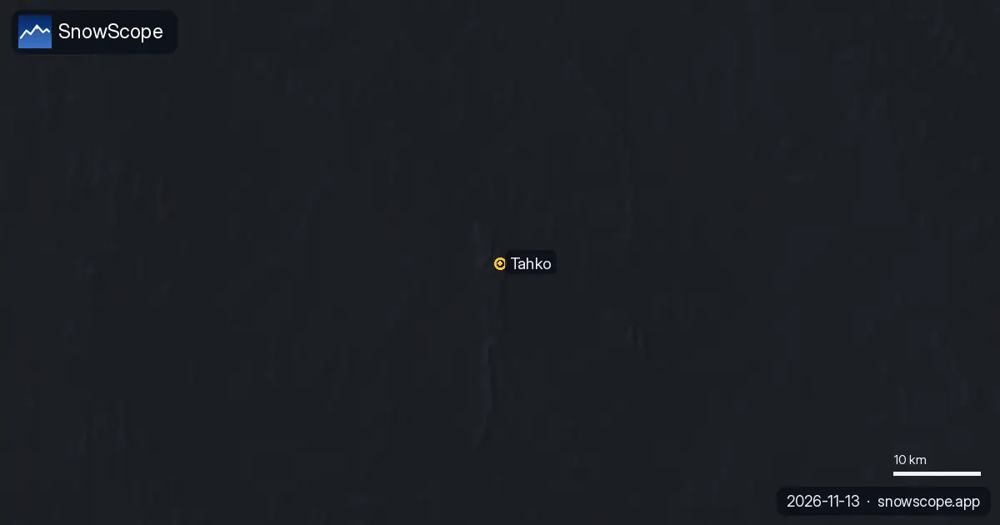
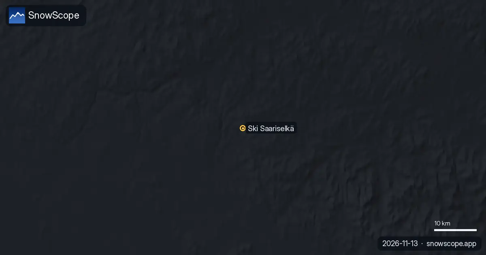
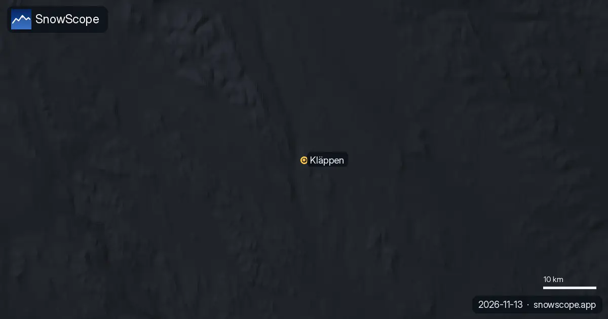
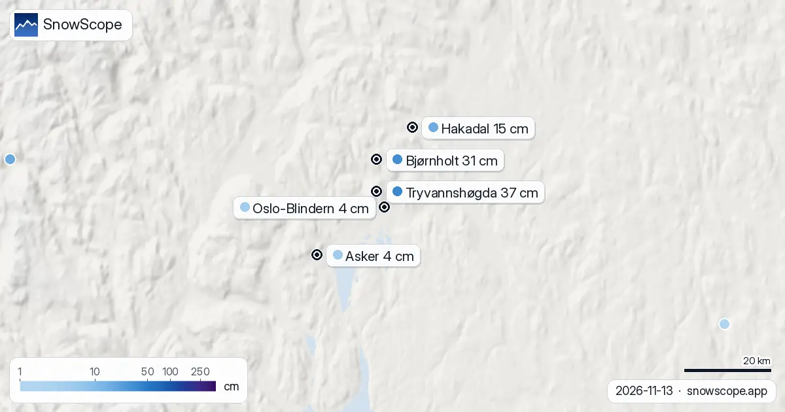
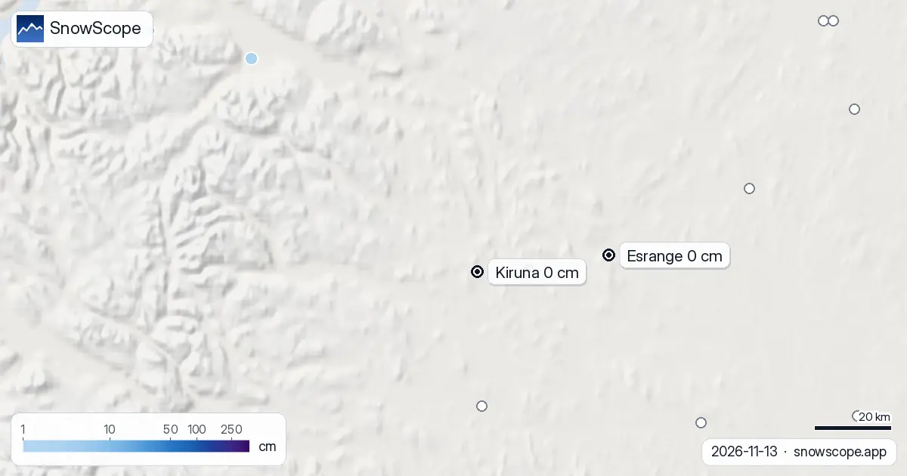

Lumiraportit · Oppaat
Päivittäiset lumiraportit laskijoille: missä lunta on, mitä on tulossa ja missä kannattaa laskea, SnowScopen lumikartasta ja mittausasemilta. Jokainen luku tulee päivän tiedoista.

Branäsin lumitilanne marraskuun puolivälissä 2026: Kindsjönin asemalla 425 metrissä mitattiin 13. marraskuuta 27 cm, Letaforsissa 17 cm ja laakson Östmarkissa 0 cm. Sateen riski tällä viikolla, avaus 11. joulukuuta, 46 mennyttä talvea.

Norefjellin lumensyvyys marraskuun puolivälissä 2026: Norjan kansallisella lumikartalla syvyys nousi yössä noin 4–5 sentistä 15–20 senttiin, ylängöllä noin 45 cm. Tuleva viikko, sateen riski alhaalla ja 46 mennyttä talvea.

Tahkon lumensyvyys marraskuun puolivälissä 2026: rinnekausi avattiin 13. marraskuuta tykkilumella, 14 hissistä 2 käynnissä; lähiasemilla mitattiin 0 cm, kun lyhytaikainen 2–4 cm:n lumipeite suli. Tuleva viikko ja 46 mennyttä talvea.

Funäsdalsfjällenin lumi marraskuun puolivälissä 2026: Ljusnedalin asemalla mitattiin 13. marraskuuta 7 cm, Tänndalen on auki pienellä alueella, Ramundberget avaa 19. joulukuuta. Tuleva viikko ja 46 mennyttä talvea.

Rovaniemen husky- ja koiraopas talveksi 2026–27: sääasemilla mitattiin 13. marraskuuta 7–8 cm, kaupungin ensimmäinen latu avattiin, kolme Visit Rovaniemen listaamaa huskytilaa päivineen ja hintoineen, päivänvalo ja oman koiran säännöt.

Myrkdalenin lumensyvyys marraskuun puolivälissä 2026: Norjan kansallisen lumikartan mukaan rinteillä noin 14 cm ja 1 333 metrissä 33 cm; ennusteemme antaa huipulle noin 44 cm seitsemässä päivässä. 46 mennyttä talvea.

Kiirunan koiravaljakko-opas talveksi 2026–27: Kiirunan sääasemalla mitattiin 13. marraskuuta 0 cm lunta, Kiruna Laplandin listaamat yrittäjät kausineen ja hintoineen, lyhyet päivät sekä oman koiran säännöt laduilla, poronhoitoalueella ja Abiskon kansallispuistossa.

Saariselän lumiraportti marraskuun puolivälissä 2026: Saariselän sääasema mittasi 13. marraskuuta 4 cm, sama koko viikon; seitsemälle päivälle ennustetaan noin 22 cm ilman sadetta; rinteet aiotaan avata 21. marraskuuta.

Riksgränsenin ja Björklidenin lumiraportti marraskuun puolivälissä 2026: Katterjåkkin asemalla mitattiin 13. marraskuuta 9 cm ja Abiskossa 2 cm, tuleva viikko, miksi hissit aukeavat vasta helmikuussa ja 46 mennyttä talvea.

Hafjellin lumiraportti marraskuun puolivälissä 2026: Norjan kansallisen lumikartan mukaan huipun lähellä noin 2 cm ja alaosassa ei mitään, tällä viikolla huipulle ennustetaan 9 cm ja alempana sadetta, sekä 46 mennyttä talvea.

13. marraskuuta 2026 Tukholman ja Helsingin sääasemilla mitattiin 0 cm lunta, kun Sälenissä oli 45 cm ja Uumajassa 20 cm. Selitys löytyy korkeudesta, merestä, kaupungista ja myrskyjen reitistä, ja 46 mennyttä talvea tukee sitä.

Pyhä-Luoston lumensyvyys marraskuun puolivälissä 2026: tuntureiden ympäristön sääasemilla mitattiin 13. marraskuuta 0–9 cm, alle normaalin; tälle viikolle ennustetaan noin 23 cm ilman sadetta. Avaussuunnitelmat ja 46 mennyttä talvea.

Vemdalenin lumitilanne marraskuun puolivälissä 2026: laakson sääasemilla mitattiin 13. marraskuuta 6–12 cm kahden lumisen päivän jälkeen, noin 8 cm lisää tällä viikolla, avaussuunnitelmat ja 46 mennyttä talvea.

Vossin lumiennuste marraskuun puolivälissä 2026: kansallisen lumikartan mukaan 1 348 metrissä noin 20 cm, kaupungissa lähes ei mitään; huipulle noin 35 cm seitsemässä päivässä, alempana sadetta.

Käytännön opas koiravaljakkoajeluihin Tromssan ympäristössä talvella 2026–27: matkailutoimiston listaamat huskytilat, lumikauden alku, ajelun hinta, kaamos ja säännöt oman koiran lenkitykseen lumella ja porojen lähellä.

Kläppenin lumensyvyys marraskuun puolivälissä 2026: 13 km:n päässä oleva Sälenin sääasema mittasi 13. marraskuuta 45 cm, edellisenä päivänä 11 cm; keskus ilmoittaa 25 cm. Sateen riski, avaus 11. joulukuuta, 46 mennyttä talvea.

Bergenin koiranomistajat, viikonloppu 14. marraskuuta 2026: perjantaina Floridassa paljas maa, vain Kvamskogenilla 5 cm, ja hyvin märkä sunnuntai. Bergenin ympärivuotiset hihnasäännöt, neljä aidattua koira-aitausta ja Fløyenin reitit.


Luulaja 13. marraskuuta 2026: Kallaxin lentoaseman asema ei lähettänyt tänään lumensyvyyttä, mutta kaupungin ympäristön asemat mittasivat 3–7 cm, kaikki torstain jälkeen satanutta, ja perjantaina sataa lisää.

Oslon koiranomistajat, 13. marraskuuta 2026: Blindernissä 4 cm lunta, Bjørnholtissa 31 cm ja Tryvannshøgdalla 37 cm. Missä koira saa juosta vapaana, mitä kytkentäsäännöt sanovat marraskuussa, ja kylmä, kuiva lauantai.

Mitattu lumi Oulussa 13. marraskuuta 2026: Kaukovainiolla 7 cm, Hailuodossa 5 cm, Ruukissa 8 cm, kaikki torstain jälkeen satanutta. Vähän lisää tulossa ennen maanantain suojasäätä.

Mitattu lumi Rovaniemellä 13. marraskuuta 2026: lentoasemalla 7 cm, Apukassa 8 cm. Lähellä tavallista marraskuun puoliväliä mutta vähän sen alle, ja edessä kylmä ja luminen viikonloppu.

Tukholman koiranomistajat, 13. marraskuuta 2026: kaupungissa mitattu 0 cm lunta, lähin 2 cm on 75 km pohjoiseen. Missä koira saa juosta vapaana Tukholmassa, luonnonsuojelualueiden säännöt ja kuiva viikonloppuennuste.


Tampere 13. marraskuuta 2026: Tottijärvellä ja kaupungin ympäristön asemilla 0 cm, koillisessa Hyytiälässä 2 cm. Puolessa talvista Tampere oli valkoinen 10. marraskuuta mennessä. Lauantaina häivähdys märkää lunta.

Mitattu lumi Tromssassa 13. marraskuuta 2026: saaren kaupunkiasemalla 6 cm, Lyngenissä 710 metrissä 44 cm, Bardufossissa 3 cm. Lähellä päivän tavallista, ja edessä hyvin kylmä viikonloppu.


Trondheim 13. marraskuuta 2026: kaupungista ei ilmoitettu lumensyvyyttä, Ørlandissa paljas maa, Meråkerissa 5 cm, Tågdalenissa 18 cm, Rørosissa 11 cm. Mikä on tavallista marraskuun puolivälissä, ja leuto, märkä viikonloppu.

Mitattu lumensyvyys Suomessa 13. marraskuuta 2026: 58 asemaa 161:stä valkoisia, lähes kaikki 64. leveyspiirin pohjoispuolella, paksuin vain 13 cm Kilpisjärvellä. Etelä, myös Helsinki ja Tampere, on paljas.

Ylläksen lumitilanne marraskuun puolivälissä 2026: Ylläksen ympäristön sääasemilla mitattiin 13. marraskuuta 0–2 cm, selvästi alle normaalin; tälle viikolle ennustetaan noin 23 cm lunta ilman sadetta, ja rinteet aiotaan avata 21. marraskuuta.

Kvitfjellin lumitilanne marraskuun puolivälissä 2026: Norjan kansallisen lumikartan mukaan noin 5 cm ylärinteillä ja 3 cm alhaalla, tällä viikolla ylös ennustetaan noin 10 cm, ja mitä 46 mennyttä talvea kertovat.

Mitattu lumi Östersundin ympärillä 13. marraskuuta 2026: Norderönissä 19 cm, Marbyssa 24 cm, Rissnassa 33 cm. Kolmesta neljään kertaa päivän tavallinen lumensyvyys, ja edessä kylmä ja kuiva viikonloppu.

Mitattu lumensyvyys Norjassa 13. marraskuuta 2026: Oslon yläpuolella Tryvannshøgdalla 37 cm, Lyngenissä Tromssan läänissä 44 cm, sisämaan laaksoissa 10–18 cm, Bergenissä, Trondheimissa ja Finnmarkin sisäosissa paljas maa.

Helsingin lumensyvyys 13. marraskuuta 2026: 0 cm Kaisaniemessä, Kumpulassa, Tapiolassa, Helsinki-Vantaalla ja Nuuksiossa. Tavallinen ensilumen päivä ja viikonlopun ennuste, joka pitää kaupungin harmaana.

Uumajassa mitattiin 13. marraskuuta 2026 20 cm lunta, kun keskiviikkona maa oli paljas. Miltä kaupungin ympäristön asemat näyttävät, miksi tämä on aikaista ja kestääkö lumi maanantain sateen.

Kiirunan lumensyvyys 13. marraskuuta 2026: 0 cm kaupungin asemalla, Jukkasjärvellä ja Esrangessa. 46 talven lumihistoriassamme kaupungissa oli tänä päivänä aina lunta. Mitä viikonloppu tuo.

Mitattu lumensyvyys Ruotsissa 13. marraskuuta 2026: 133 asemaa 322:sta valkoisia, vyö Taalainmaalta Länsipohjaan jopa 45 sentin lumella, paljas etelä ja lähes paljas kaukainen pohjoinen Kiirunan ympärillä.

Tukholman lumensyvyys 13. marraskuuta 2026: 0 cm Observatoriekullenilla ja kaikilla kaupungin ympäristön asemilla. Milloin lumi yleensä tulee ja miksi viikonloppu ei sitä tuo.

Mitattu lumensyvyys Oslossa 13. marraskuuta 2026: Blindernissä 4 cm, Bjørnholtissa 31 cm ja Tryvannshøgdalla 37 cm. Miltä tavallinen marraskuun puoliväli näyttää ja mitä viikonloppu tekee lumelle.

Maassa mitattu lumi 13. marraskuuta 2026 Oslossa, Bergenissä, Trondheimissa, Tromssassa, Tukholmassa, Göteborgissa, Östersundissa, Uumajassa, Luulajassa, Kiirunassa, Helsingissä, Tampereella, Oulussa ja Rovaniemellä: Uumajan 20 sentistä Kiirunan paljaaseen maahan.